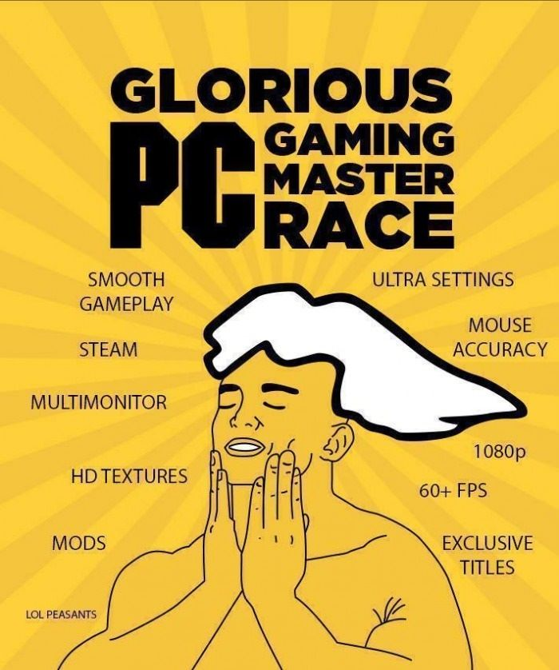
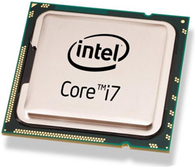
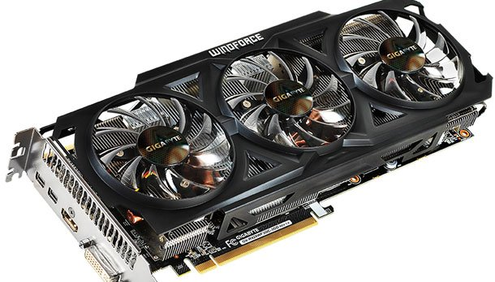
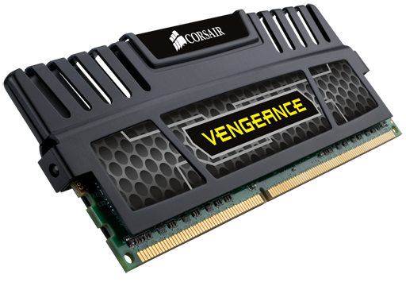
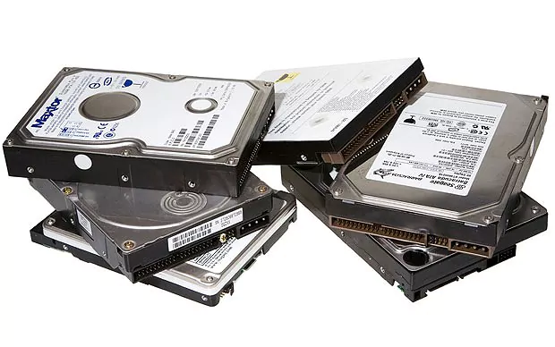
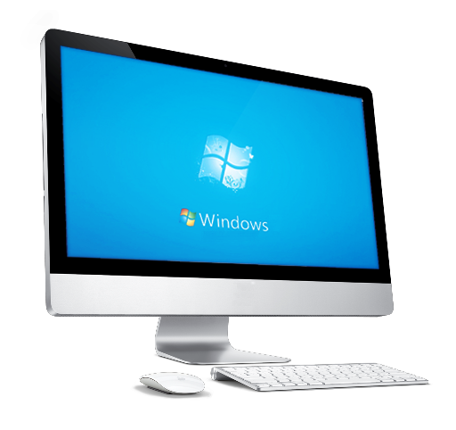
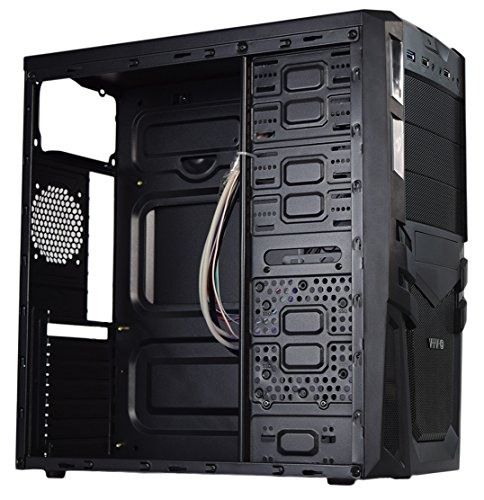

History
What some consider the best way to play or the "Master Race" of gaming, the PC is the most expendable gaming system on the market. This became popular in 1983 when the gaming era was almost doomed. It was the digital games that revived the PC gaming in the early 2000s. Before all this, the famous "Space Wars" game was invented by students at MIT. Text adventure games ruled the PC mass because of the interaction between keyboard and user. The aftermath of the 1983 crash benefited the PC gaming developers because consumers bought low level computers for their personal use. Companies like EA took the advantage of this to produce PC games for profit and it worked well, very well. As technological advancements became more prominent, the PCs became more powerful. More speed, better resolution, less lag, bigger screens, ability to change or remove unwanted parts for better, more efficient components, all these helped the PC community grow exponentially. Nowadays however, the community believes they are the rulers of the gaming world because of the advancements when in reality, the consoles have caught up.

- Overwatch
- World of Warcraft
- League of Legends
- The Sims
- Starcraft II
- Civilization VI
- Portal
- Half life
PC Games
(These are just to name a few)
WARNING! Crude humor, strong language, sexual content.
- Steam, a gaming platform on PC, are notorious for there sales of 90% off of AAA titles.
- PC gaming community are by the most competitive players in the world.
- Building a decent gaminh PC is cheaper than buying any console.
- Gaming PCs can be upgraded everyday improving your gamin experience.
- You can play on a bigger screen with the same performance as playing on the PC screen.
Fun Facts
Building a PC
Building a gaming PC nowadays is very easy. You just got to know the parts.
CPU
GPU
RAM
HDD
HD Screen
Shell
Many other optional components can be added and more than one of each component can be added.
All of these are replaceable for better quality of gaming.